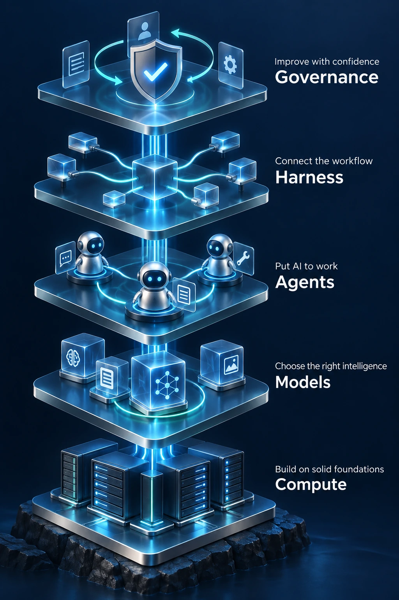

Pillar 03 · Applied Research
Research.
Built for reality.
Applied research, validated pilots and the infrastructure to deploy AI responsibly.

Five connected layers support development, testing, deployment and continuous improvement.
Five layers for applied AI.
- Compute
- Build on solid foundations.
- Models
- Choose the right intelligence.
- Agents
- Put AI to work.
- Harness
- Connect the workflow.
- Governance
- Improve with confidence.
Applied Research
Test your next idea with real evidence.
Every applied research project starts with a real business or social problem and moves through one disciplined path:
Applied Research
Research partnerships that solve real operational problems, turning partner problems into tested prototypes and deployment-ready solutions.
Explore Applied ResearchAI Pilots & Validation
Prototypes, pilots, workflow validation, and applied experimentation, test AI in your real workflows before you commit to scale.
Outcome: evidence, not opinions, a validated pilot or a clear "not yet."
Collaborate on applied research
Build confidence in your next AI investment.
Research partnerships, pilot projects, and applied experimentation, for organizations, researchers, and builders.